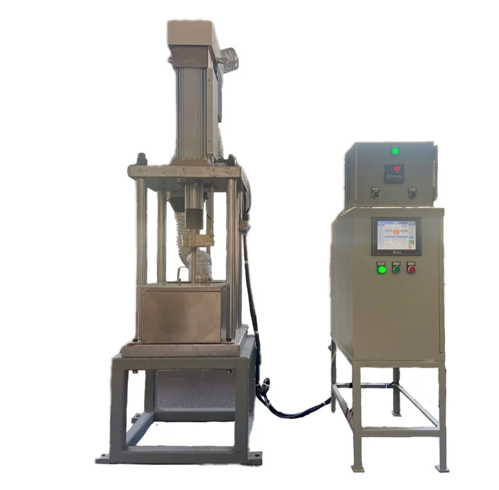
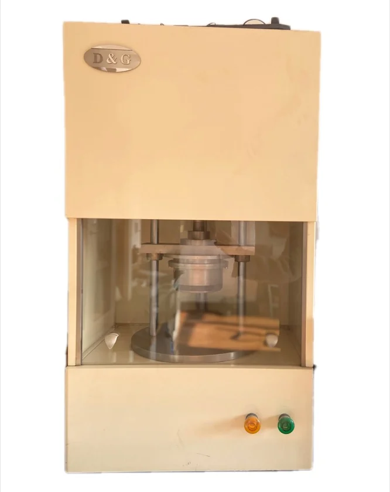
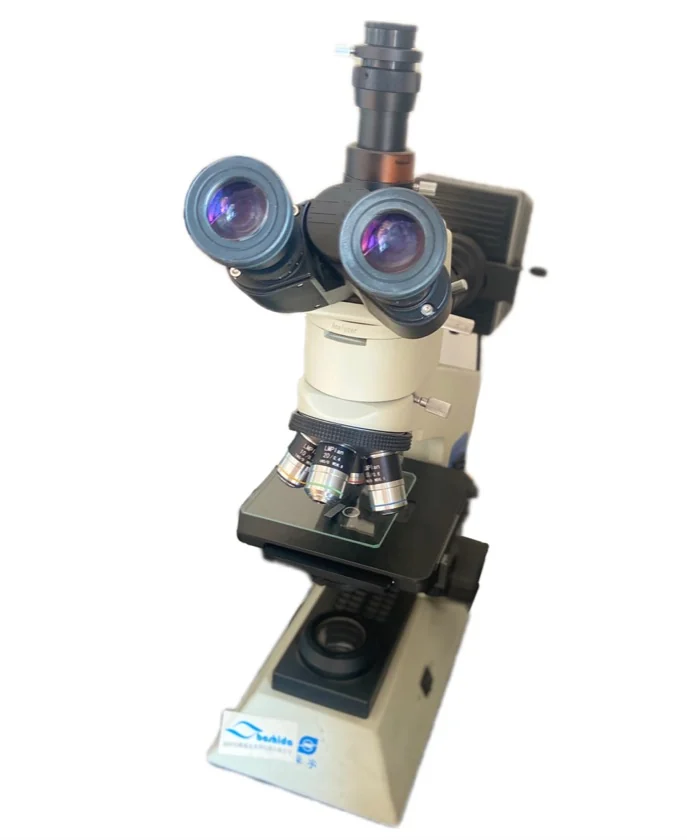
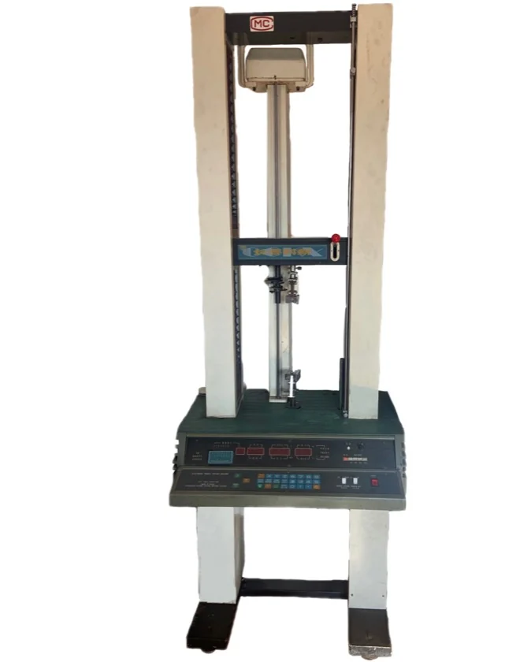
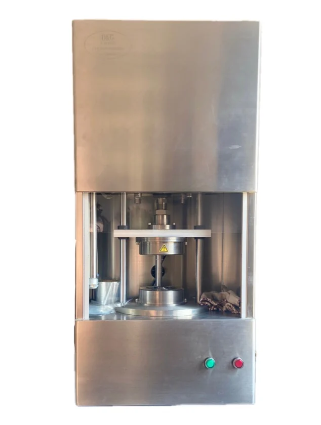
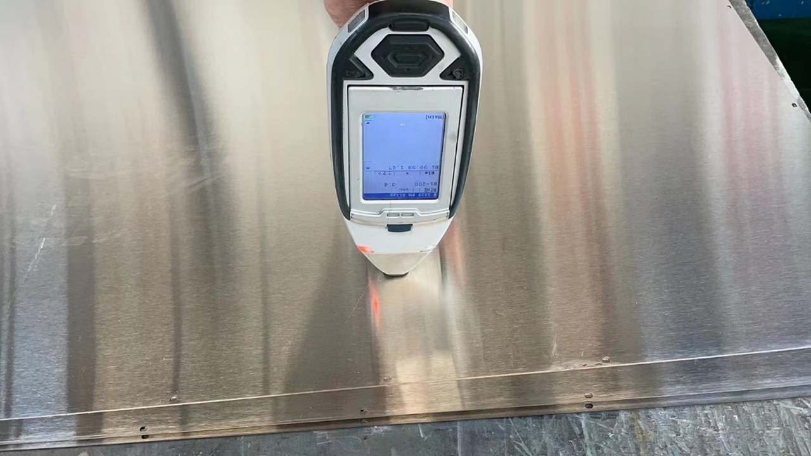
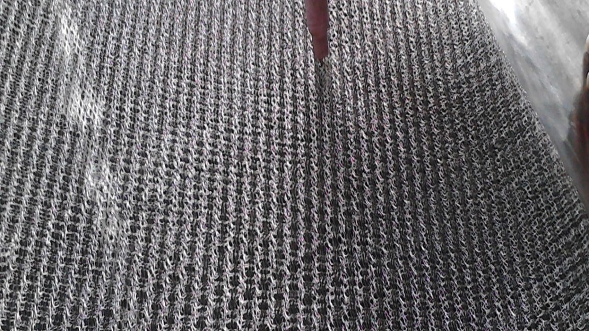
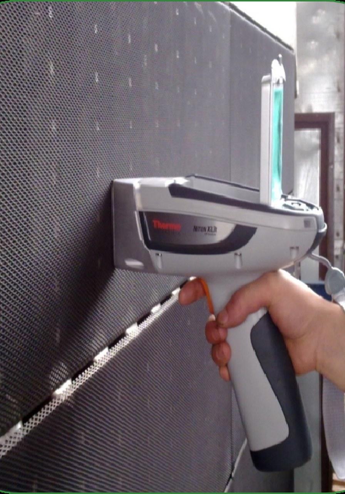

Etanșare industrială din cauciuc și fluoroplastic, Celule de electrolizor și produse de etanșare.
Tehnologie și calitate
Sistemul calității și înregistrările de inspecție susțin fiecare lot.Repararea celulelor de electroliză și modernizarea spațiului membranei
Repararea celulelor de electroliză și modernizarea spațiului membranei
Metatecno sprijină instalațiile clor-alcaline prin inspecție, reparare, refacerea suprafețelor de etanșare și modernizarea spațiului membranei. Domeniul lucrării se stabilește după fotografii, desene, istoric de funcționare, mediu și condiții de lucru.
Echipamente de testare a calității 2

Echipamente de testare a calității 3

Echipamente de testare a calității 4

Echipamente de testare a calității 5
Profilul companiei
Ne concentrăm pe celule de electrolizor, etanșări pentru electrolizoare și piese compozite cauciuc-plastic.
Cultură tehnică
Sprijin tehnic de la desen până la producție stabilă.
Certificări
Sistemul calității și înregistrările de inspecție susțin fiecare lot.
Rețea de servicii
Livrare din mai multe locații pentru produse cu cerere mare și clienți pe termen lung.
Produse fluoroplastice
Produse fluoroplastice tehnologie de prelucrare
Note tehnice pentru produse de etanșare din PTFE, PFA, FEP/F46 și PVDF, de la formare și laminare la injecție, căptușire și finisare.Formarea prin compresie a fluoroplasticelor
Formarea prin compresie a fluoroplasticelor produce plăci, bare, manșoane, benzi, inele de etanșare, membrane și piese cu inserții metalice. Procesul cuprinde preformarea, sinterizarea și răcirea. Pulberea PTFE este introdusă uniform în matriță și presată la temperatura camerei într-un semifabricat dens; apoi este încălzită peste punctul de topire și răcită. Unele fluoroplastice se presează la cald, iar PTFE de obicei la rece. Raportul de compresie este 4-6, contracția 2.6-4.5%, pulbere 20-500 microni, presiune 17-35 MPa; este necesară aerisirea, iar un semifabricat de 100 mm se menține circa 15 minute.
Sinterizare și răcire
La sinterizare, viteza de încălzire se controlează la 20-120°C pe oră, mai lent pentru piese mari. Rășina de suspensie se sinterizează de obicei la 370-380°C, iar rășina de dispersie la 360-370°C. Temperatura mai mare crește contracția și porozitatea, deci timpul se controlează. Răcirea este de regulă lentă, 15-25°C pe oră. Răcirea rapidă se folosește doar pentru plăci sub 5 mm sau tuburi cu perete subțire. Unele produse se recoac la 100-120°C timp de 4-6 ore.
Laminarea fluoroplasticelor
Membranele PTFE se formează prin laminare unidirecțională sau multidirecțională. După laminare, foaia albă opacă devine semitransparentă și cristalină. La laminarea unidirecțională, foaia transparentă reîncălzită trece rapid prin doi cilindri identici; raport 1.5-2.5, viteză circa 20 rpm. La laminarea multidirecțională, o foaie sinterizată și răcită este laminată în mai multe direcții pentru reducerea grosimii. Raport 2-2.5, cilindri 150-200°C, presiune abur 0.5-0.9 MPa.
Injecția PFA
PFA este un copolimer de tetrafluoretilenă și eter vinilic perfluoroalchil, un material de tip PTFE procesabil în topitură. Prelucrarea poate ajunge la 425°C, iar descompunerea este peste 450°C, de aceea intervalul uzual este 330-410°C. Absorbția de umiditate este aproximativ 0.03%, deci uscarea nu este de obicei necesară. Inserțiile se preîncălzesc la circa 140°C. Zone cilindru 200-210°C, 300-310°C și 350-410°C; duză puțin mai joasă; matriță 140-230°C; presiune 40-90 MPa; viteză moderată; menținere scurtă; răcire 40-150 secunde.
Prelucrare secundară
Din cauza proprietăților fluoroplasticelor, unele produse necesită prelucrare secundară: așchiere, sudare, căptușire și expandare. Așchierea seamănă cu prelucrarea metalului și folosește strunguri, mașini de găurit și raboteze; semifabricatul trebuie lăsat 24 de ore înainte. Sudarea se face prin presare la cald sau baghetă cu aer cald. Presarea la cald cere dispozitiv special, peste 327°C și presiune. Căptușelile PTFE și FEP protejează țevile feroase împotriva coroziunii.
Expandare, căptușire și materiale
Expandarea se aplică tuburilor ondulate, tuburilor termocontractabile și foliilor. Pentru F46 se poate folosi calibrare în vid răcită cu apă; raport de întindere 3-7, con de topitură 10-20 mm, matriță 80-160°C, presiune 0.1-0.2 MPa, viteză 80-500 mm/min. Exemple: bandă moale PTFE pentru ghidaje, amestecuri cu polistiren, poliimidă sau poli-p-hidroxibenzoat, umpluturi cu grafit, disulfură de molibden și bronz, căptușeli PTFE armate cu fibră de sticlă, inele PVDF, epoxid fluorurat, perfluoroelastomeri și unsori perfluoropolieterice.
Celule de electroliză
Celule de electroliză
Metatecno fabrică celule de electroliză cu membrană ionică și asigură reparații, acoperiri, modernizarea distanței membranei și modernizare de cadre pentru echipamente clor-alcali.
Celule de electroliză

Celule de electroliză
